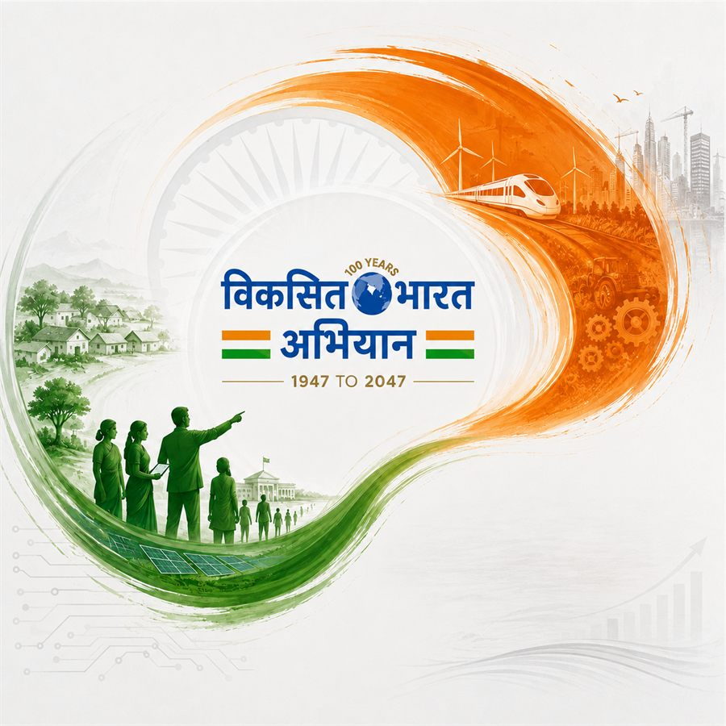
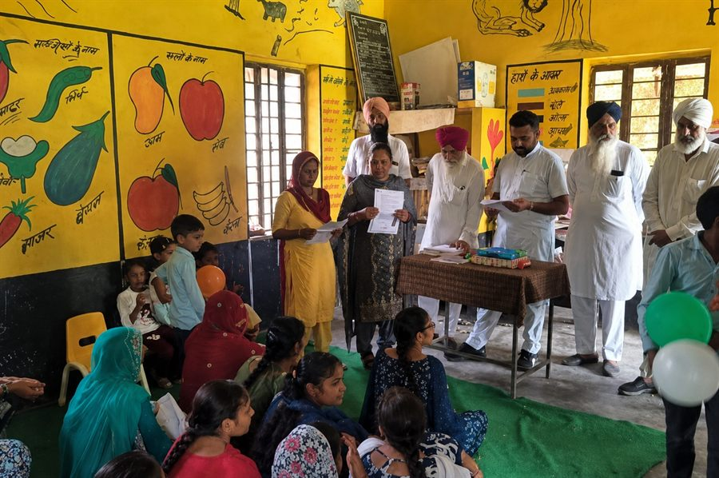

Positive Change.
Real Impact.
We partner with governments and institutions to enable strategic policy interventions, embed technology for accelerated development and build capabilities at scale.
Explore our workWe partner with governments and institutions to enable strategic policy interventions, embed technology for accelerated development and build capabilities at scale.
Explore our workEmpowered people build stronger communities, and stronger communities build stronger nations. Our work helps accelerate inclusive and sustainable growth.
Positive Mantra Consulting Pvt. Ltd. partners with governments, institutions, communities, and enterprises to turn vision into measurable outcomes. Driven by the ambition of Viksit Bharat 2047, we help transform policy into progress, capability into opportunity, and intent into sustainable impact.
Our purpose
From Strategy, Implementation and Capacity Building, we embed Technology in all we do
We partner with governments and institutions to translate policy intent into ground-level outcomes accelerating India's journey to a developed, inclusive, and self-reliant nation.
We build the capabilities of communities, institutions, entrepreneurs, and local leaders through awareness, skill development, behavioural change, and leadership programmes.
We embed technology, AI, data, and digital platforms to improve service delivery, drive efficiency, and enable accelerated, sustainable and inclusive growth.
From strengthening rural livelihoods and local governance to enabling accelerated industrial growth, PMC partners with Governments and Institutions to develop policy and enable effective implementation.
Discover how we can helpTransforming Jharkhand's Khadi sector through market linkages, livelihood support, digital innovation, and design modernization creating prosperity at the grassroots.
Read more
Panchayati Raj Institutions (PRIs) play a pivotal role in decentralized planning and grassroots development. However, the meaningful participation of women and children in local governance has often remained limited, creating a critical gap in inclusive decision-making.
Read moreAn on-premises AI assistant that enables officials to find answers in Hindi or English from official documents. Powered by a secure RAG pipeline, all data remains within the government's controlled environment.
Read moreGet in touch to learn more about how we work shoulder-to-shoulder with public sector leaders to reimagine government services and programs.
 Srinagar
Jammu
Dehradun
Chandigarh
New Delhi
Gurgaon
Ranchi
Raipur
Mumbai
Srinagar
Jammu
Dehradun
Chandigarh
New Delhi
Gurgaon
Ranchi
Raipur
Mumbai